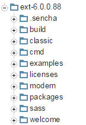
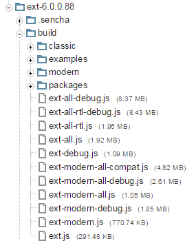
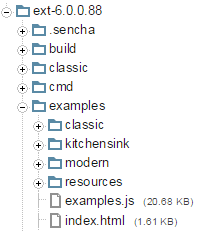

介绍
随着Ext JS的发布, 为了减少对现有代码的改动, 我们做了很大努力, 但在某些情况下却很难实现. 这篇向导逐步介绍了最重要的变化，还有可能会对你的Ext JS 和 Touch 应用的升级带来的潜在影响.
包装(Packaging)
合并 Sencha Touch 的组件需要围绕一个新的概念"工具包(toolkit)"来重新组织框架源码. 工具包(toolkit) 基于核心之上，包含了框架的可视化组件. 所有这些部分都使用 Sencha Cmd 包(packages) 来容纳它们的 JavaScript、主题样式, 以及其他相关资源.
分布
生成的 ZIP 压缩包必须重新组织成这3个部分: 经典(classic), 现代(modern) 和 公共(common).

build 和 examples 文件夹差不多:


“ext-all.js” 文件还是位于“build” 文件夹内. “ext-modern.js” 则类似于“sencha-touch.js” ，不过基于的是 公共(common) 核心包.
“kitchensink” 示例，我们把它叫做 通用(Universal)App - 是同时包含 classic 和 modern Build配置文件(Profiles)的一个单页app.
包(Package)名
“ext-” 和 “sencha-” 这些为了区分不同包的前缀已经被移除. 这些原本是用于区分 Sencha Touch, Ext JS, 和 公共内容的，但是现在它们都是 Ext JS. 也就意味着 “sencha-charts” 现在只是 “charts”了. 主题包(Theme packages)的名字也是一样的 (“ext-theme-neptune”更名为“theme-neptune”).
Ext.ux 命名空间
从 Ext 6 开始, “Ext.ux.*” 开头的类代码文件已经移至“ux”包. 在此之前, 用 Sencha Cmd 创建app的时候, 这些代码是被自动包含进 Ext JS 代码结构树中的.
换句话说, 如果一个app用到了 Ext.ux 命名空间, 则需要在 Sencha Cmd 生成的app.json文件中添加“ux”这个包, 才能解析这个命名空间下的类.
旧的 ext-charts
从 Ext JS 6 开始，我们已经丢弃了“ext-charts” 包. 任何使用了 “ext-charts”的开发者，需要重构你们的应用，转而使用“charts” 包 (在 Ext JS 5 中名字叫“sencha-charts”). 使用 “charts” 包之前, 请在 Sencha Cmd 生成的 app.json文件的requires 块中加上 “charts”.
旧的 无障碍(Accessibility) 包
我们已经把 无障碍(Accessibility) 和 无障碍网页应用技术(WAI-ARIA) 支持移动到了核心框架中，并且从 Ext JS 6 移除了旧的“ext-aria” 包. 任何使用了“ext-aria”的开发者，需要从 Sencha Cmd 生成的 app.json文件的requires 块中移除它.
无障碍
按钮(Button)
Ext JS 支持在Button实例或其他形式的交互中使用 menu 配置. Button同时具有 menu 和 handler, 或者 href配置, 这违反了无障碍网页应用技术(WAI-ARIA) 1.0 的建议. Button 构造函数现在会检查这种不规范的Button配置，并且如果发现的话，会在控制台抛出一个错误或者警告.
想禁用这些检查, 请在app.js中把 Ext.enableAriaButtons 属性设置为 false.
分割按钮(Split button)
2个 Tab 键停顿位(tab stops)
Split button 现在渲染的时候，新加了一个元素用于设置 tabindex 属性，从而可以支持键盘导航. 按下 TAB 键 会聚焦到 Split button 的主要元素上, 再按一下 TAB 键会聚焦到展开箭头元素上.
按下空格或者回车键时，如果聚焦的是展开箭头， 则会调用arrowHandler 函数(如果有的话), 并且会触发 arrowclick 事件. 按下方向↓键则会打开按钮的菜单(如果有的话).
arrowHandler
Ext JS 原本就支持给一个 Split button 实例设置 arrowHandler 配置，或者 arrowclick 事件监听函数, 通过指针交互时激活. 有可能同时配置了 menu 和 arrowHandler. 2个都设置了的话，当展开箭头被点击或者通过键盘操作被激活，结果可能会令人困惑. 这也违反了无障碍网页应用技术(WAI-ARIA) 1.0 的建议.
Split button 构造函数现在会检查这种不规范的Button配置，并且如果发现的话，会在控制台抛出一个错误或者警告.
想禁用这些检查, 请在app.js中把 Ext.enableAriaButtons 属性设置为 false.
循环按钮(Cycle button)
Cycle button 不符合无障碍网页应用技术(WAI-ARIA) 1.0 的建议. 如果你的app需要支持无障碍技术的话，不建议使用此控件.
如果创建了 Cycle button 实例的话，Cycle button 构造函数会在控制台抛出一个错误或者警告.
想禁用这些检查, 请在app.js中把 Ext.enableAriaButtons 属性设置为 false.
工具栏(Toolbar)
在 Ext JS 5 的工具栏容器控件实现了 WAI-ARIA 1.0 兼容键盘导航的行为: 按下 TAB 键会聚焦到工具栏上最后一个被访问过的子控件, 之后按下 TAB 键，此工具栏将会失去焦点，并聚焦到下一个支持聚焦的元素上. 工具栏聚焦的时候，按方向键，焦点将在各个子控件上切换.
这个行为还需要再优化，因为当工具栏里面有输入框或者滑块(Slider)控件的时候，方向键事件可能失效.
从 Ext JS 6 开始，当工具栏里面有输入框或者滑块(Slider)控件的时候，工具栏会禁用 WAI-ARIA 兼容行为. 不过工具栏里面的所有控件仍然可以用 Tab 键切换焦点.
此行为不可配置.
控件组(FieldSet)
从 Ext JS 6.0 开始, FieldSet 支持用键盘收缩和展开. 收缩的工具按钮(tool)或者复选框(checkbox)会响应Tab按键，也会对空格和回车键作出响应.
使用 descriptionText 和 expandText 配置项来控制辅助设备的发音，比如屏幕阅读器.
Window
从 Ext JS 6.0 开始, Window 组件会避免焦点移到Window外面. 在 Window 的最后一个可聚焦的元素上按下 TAB 键，焦点将会移至Window内第一个可聚焦的元素上, 反之亦然. 这一点根据的是 WAI-ARIA 1.0 的要求.
若想关闭此功能, 将Window实例的 tabGuard 配置项设为 false即可.
Panel
从 Ext JS 6.0 开始, Panel 标题栏(header)工具按钮(tool) 会响应 Tab 按键，类似 Toolbar 中的按钮一样.
此行为不可配置.
Ext.Img
现在 Ext.Img 实例会检查 alt 配置项，如果没有配置的话，控制台会抛出一个警告. 这一点根据的是 WAI-ARIA 1.0 的要求.
此行为不可配置.
自动化 无障碍应用(ARIA) 区域
Panel 实例参与 border 布局(layout)的时候，如果 ariaRole 没有显式配置的话，会被自动配置为 ariaRole: ”region”.
无障碍应用(ARIA) 区域应该有个标题
配置有 ariaRole: “region”的Panel 实例, 包括上面提到的自动配置的那种, 现在都会检查是否有 title 属性. 这一点根据的是 WAI-ARIA 1.0 的要求: 区域元素需要 title. 如果一个 Panel 设置了ariaRole: "region"， 却没有title属性，那么控制台会抛出一个警告.
想禁用这些检查, 请app.js中把Ext.enableAriaPanels 属性设置为 false.
border布局中的 动态 无障碍应用(ARIA) 区域 暂不支持
Border 布局会给具有region属性的控件设置 ariaRole: "region". 然而如果控件已经渲染完毕, ARIA 特征可能不会正确应用上去.
通常这发生在默认设置了 ariaRole: "presentation" 的 container 或者 panel 上.
为了避免这个问题, 显式以声明的方式给Border 布局中具有region属性的控件配置, 或者在它们渲染之前添加到Border 布局容器中.
图表(Charts)
事件(Events).
Chart 的‘itemhighlight’ 事件监听函数的第一个参数现在是chart自身.
渲染函数(Renderers).
坐标轴(axis) 的 renderer 的第一个参数现在是坐标轴自身. 以前用了坐标轴(axis) renderer 的代码，现在可能会出错.
序列(Series) 提示信息(tooltip) 的 renderer 函数的第一个参数也变成了提示信息(tooltip)自身.
Polar series.
Polar series 已经使用‘angleField’ 和 ‘radiusField’ 配置项，分别替代了以前的‘field’/‘xField’ 和 ‘lengthField’/‘yField’配置项.
Ext.chart.MarkerHolder
‘getBoundMarker’ 方法已经废弃. 请使用 ‘getMarker’.
‘bindMarker’ 方法的行为已经变了. 只有单个 Marker 才能绑定到指定的名字下. 随后调用此方法会覆盖 给定名字下的marker, 而不是添加一个marker给指定的名字.
Ext.draw.sprite.Text 改进.
font 缩写形式 (文字图形Text sprite的‘font’ 属性) 现在根据此文档进行解析: http://www.w3.org/TR/CSS21/fonts.html#font-shorthand
以前的解析不总是正确的. 现在你的图表(charts)和图形(drawings) 中的文字应该看起来不一样了.
font 推荐的书写顺序是: fontStyle, fontVariant, fontWeight, fontSize, fontFamily. 比如: italic small-caps 900 x-large/110% 'Helvetica Neue'
line height 值没有意义 (因为图形drawings没有继承) ，它会被忽略. 举个例子, 上面的缩写和这个是一样的: italic small-caps 900 x-large 'Helvetica Neue'
如果独立的 font 属性和 font 缩写形式都提供了的话, 文字图形(Text sprite)的setAttributes 函数会丢弃独立的 font 属性.
对主题化图表中文字元素的改进.
上述对 文字图形(Text sprite)的setAttributes 函数的改动，使得在主题化图表的时候更加可靠.
背景:
Font 缩写形式是决定文字图形(Text sprite) 中文字的样式的 (即被渲染器渲染的，用于Canvas的‘font’属性，或者 SVG 的‘text’元素的‘font’样式) . 每次你设置了单独的 font 属性, font 缩写会根据它重新编译. 每次你改了 font 缩写, 它也会被解析到各个独立的 font 属性中. 两种情况下，文字图形(Text sprite) 都会更新.
示例:
用户提供了设置图标序列标签(series labels)的配置(也就是文字图形Text sprites), 使用了 font 缩写形式. 缩写形式被解析到各个独立的 font 属性中, 并且相应的图形属性也被设置了. 然后此图标设置了一个主题, 主题里面的独立的 font 属性, 组成了新的 font 缩写. 这会覆盖先前用户定义的 font 样式. 换句话说, 不管用户指定了什么 font , 主题中的 font 将会被使用.
然而, 主题不仅仅是应用它们的值到顶层用户配置中, 而且会和它们合并 (_某些用户配置的属性会接管主题中的值_), 用户指定的 font 缩写和来自主题中独立的 font 属性，将会成为 label 最终的配置， 以后会被 label 丢弃.
所以, 主题中应该不能用 font 缩写.
致 使用 Sencha Touch Charts 的用户.
坐标轴 transformed 事件已经改名为 visiblerangechange.
animation 配置项替代了以前的 animate 配置.
Polar charts 的 innerPadding 配置项现在应该总是数字(number).
自定义图形(sprite) (图表的 sprites 配置项) 已经不再嵌入图表的‘overlay’ 平面, 而是‘chart’ 平面.
Surface 的 rect 配置项 替代了以前的 region 配置.
Animation modifier 的 customDurations 配置项替代了以前的 customDuration 配置.
各个renderers 的函数声明已经变更. 请查看文档.
其它注意事项.
你的代码可能会出错，如果你不小心添加了同一个图形(sprite)或者相同ID的图形(sprite)到一个平面上. 你也可能在chart销毁的时候遇到未预料的异常, 因为以前没有正确销毁的元素现在可以正确销毁了.
各种 API 变化
Ext.container.Container
doLayout函数已被移除. 请使用updateLayout.items和floatingItems集合在容器销毁期间都会被销毁并置为 null. 在容器销毁之后尝试访问这些属性将会发生异常.
Ext.panel.Panel
dockedItems集合在 Panel 销毁期间都会被销毁并置为 null. 在 Panel 销毁之后尝试访问dockedItems属性将会发生异常.
Ext.app.ViewController
fireViewEvent会自动把当前 View 添加到事件的第一个参数(如果第一个参数不是当前 View 的话). 确保和 view 的普通事件一致.
Ext.layout.container.Table
cellId配置已被移除. 请使用cellCls来配置样式.
Ext.grid.feature.Summary, Ext.grid.feature.Grouping
- 统计(Summary) 和 分组(Grouping) 功能已被重构，不再依赖 Reader 实例中的
rawData属性. 这样可以允许设置Ext.data.reader.Reader的keepRawData配置项的默认值为false.
- 统计(Summary) 和 分组(Grouping) 功能已被重构，不再依赖 Reader 实例中的
Ext.data.reader.Reader
- Reader 实例中默认不再包含
rawData属性. 如果你需要rawData，可以通过keepRawData配置项来控制这一行为; 更好地, 可以考虑使用transform选项来处理数据. 使用rawData可能会导致内存泄漏, 特别是在IE中使用 XML reader 的时候.
- Reader 实例中默认不再包含
Ext.data.writer.Json
getExpandedData函数已被移除. 覆盖(Override)writeRecords来提供进一步的定制.
Ext.mixin.Observable
addListener和removeListener不再支持一个事件数组.
Ext.FocusManager
- 旧的
Ext.FocusManager已经从框架中移除.
- 旧的
Ext.EventObject
Ext.EventObject单例类已经从 Ext JS 6 中移除. 为了兼容已有代码，我们仅在事件冒泡期间将当前的Ext.event.Event实例赋值给Ext.EventObject, 并在事件触发序列的最后把Ext.EventObject引用移除，以避免潜在的内存泄漏.
- 旧的引用了
Ext.EventObject的成员属性的代码，需要变更至引用Ext.event.Event中同样的属性.
Ext.view.AbstractView
itemremove事件处理函数已经和Ext.view.AbstractView#onRemove的触发一致了. 现在此事件仅在 items 块被移除的时候触发一次, 被移除的 items 以数组形式传递. 以前，每个item被移除的时候都会触发.
Ext.panel.Table
CellEditing插件, 当用在锁定列表格中(locked grid), 不再克隆并复制一份到各个子表格中. 你给表格配置的仅有一份CellEditing实例，并可管理两个子表格. 键盘导航可以跨越表格的锁定列边界了.
- 配置子表格的
CellEditing插件的lockedGridConfig和normalGridConfig将不再生效 .
Ext.direct.Manager
- 在版本6.0.1中，
loadProvider函数已被改进，以便更好地与Ext Direct规范和其他文档相符合. 需要注意的是这些变更在 6.0.0 中并不存在. 请看 6.0.1 的版本发布说明.
- 在版本6.0.1中，